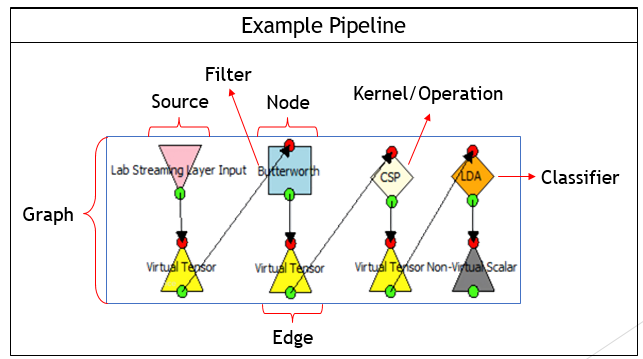
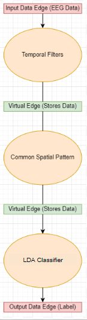
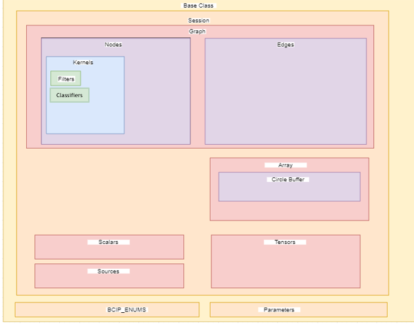

Getting Started with MindPype
What is MindPype?
MindPype is a Python-based software library designed for BCI researchers and developers that greatly simplifies the design and development of BCI data processing pipelines. Users can create and implement custom processing pipelines to use alongside new or existing BCI interfaces.
Why use MindPype?
MindPype is designed to be a flexible, modular, and extensible library that can be used to create and implement custom processing pipelines.
Can I use MindPype?
If you have Python installed, you can use MindPype. MindPype is compatible with Python 3.3 and above.
Basic Structure of MindPype
MindPype uses a graph based model of processing pipelines:
Consider the above example. MindPype has opted to model processing pipelines as acyclic, directed graphs, which individual operations modeled as nodes within the graph, that contain kernels (or specific operations, ie. Add). Each node within the graph is connected by edges, or data storage objects created to serve as inputs and outputs as nodes within the graph.

There are other important aspects of the graph, including a data source (a class within MindPype). Filters/Classifiers are special types of kernels that are so frequently used that they were made into their own objects, but still operate within kernels (more on this in the docs). As such, MindPype’s structure resembles this directed-graph-processing-pipeline model.
